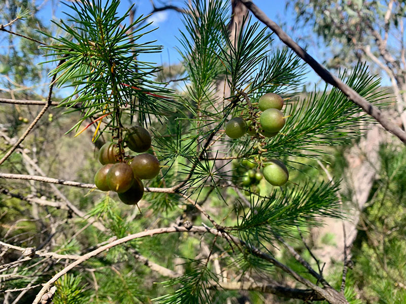

|  |
Overview
The Geebung, traditionally known as "Mambarra," is a shrub or small tree that typically ranges from 2 to 4 metres tall. It produces an abundance of oblong or oval-shaped berries, with soft edible flesh surrounding a central pit. These fruits only ripen after they have fallen to the ground or turned a purple/black colour. In the summer, the Geebung also grows flowers with four yellow, slender, curved petals. Interestingly, there are 42 different species of Geebung, each with its unique characteristics.
|
|
Where it grows
Geebung is most commonly found in Brisbane and Queensland, however it is also found in Victoria, Tasmania, Western Australia, Northern Territory and South Australia. Geebung plants are found in a variety of habitats in all states; from heaths to open forests and woodlands, on coastal sand and sandstone. It is suitable for: light (sandy) and medium (loamy) soils. The plant prefers well-drained soil and can grow in nutritionally poor soil. Its suitable pH is mildly acidic and neutral soils.
Nutritional value identified by First Nations People
The Geebung berries are a local treatment for skin disorders, specifically psoriasis and infections caused by the Staphylococcus virus, which is a leading cause of boils and cellulitis. The treatment involves application of juice derived from the berries directly onto the affected areas of skin. Because of the fruit's skin-healing properties, Aboriginal tribes traditionally used them for scratches and burns.
In a Cambridge study, it was discovered that the primary minerals present in Geebung berries are iron, zinc, and manganese. These minerals are essential for various bodily functions, including skin health. Iron plays a crucial role in oxygen transport and energy production, zinc is vital for immune function and wound healing, and manganese is important for bone formation and antioxidant protection.
How we use (your fruit) today
Nowadays, Geebung is primarily used as a hedging plant, with its foliage often featured in floral arrangements. The fruit pulp is typically chewed off the stone as a snack. The Persoonia lanceolata species is especially valued in horticulture for its bright green hues, while the Persoonia linearis is admired for its strikingly bright bark. Geebung leaves are also traditionally boiled to make a tea that can help with chest infections.
Why we should farm (your fruit)
Geebung should be cultivated on farms across Australia because it can thrive in various climates and regions throughout the country. Its adaptability to different soil types and resilience in both temperate and subtropical climates make it an ideal crop for many states. Additionally, its economic potential, low maintenance requirements, and environmental benefits further support the case for widespread growth. As a native plant, Geebung also contributes to the preservation of Australia's biodiversity and cultural heritage.
|